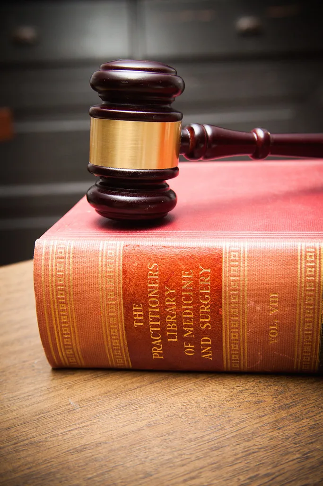
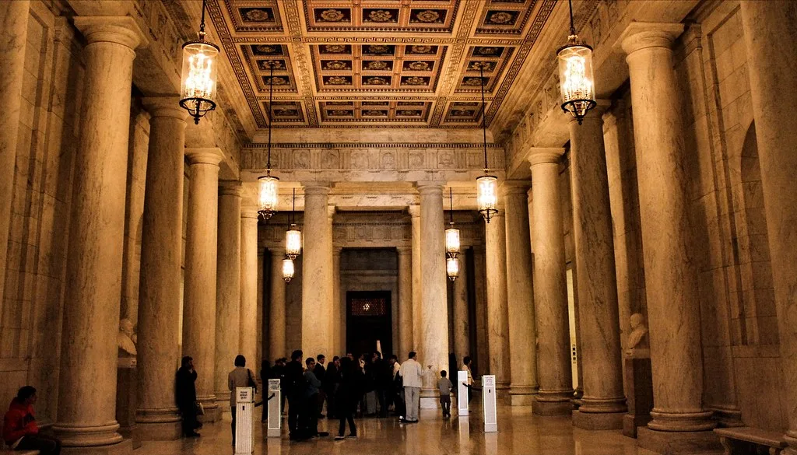

조희대 "재제청 갈등, 국감서 얘기하자"더니…정작 국감 증인은 거부
오는 6일부터 25일간 이어지는 2026년 국정감사를 하루 앞두고, 조희대 대법원장을 둘러싼 '대법관 재제청 거부' 갈등이 정치권 최대 쟁점으로 떠올랐다. 조 대법원장은 앞서 이재명 대통령과의 갈등이 불거졌을 때 "국정감사 등을 통해 입장을 밝히겠다"고 말했지만, 정작 법제사법위원회 국정감사 증인 출석 요구에는 응하지 않겠다는 뜻을 밝히면서 여당의 반발을 사고 있다. 대통령과의 협의 내용을 공개하는 것이 적절하지 않다는 이유에서다.
갈등의 발단은 지난달 이 대통령이 조 대법원장이 노태악 전 대법관 후임으로 제청한 손봉기 대구지법 부장판사에 대한 임명동의안을 국회에 제출하지 않고 재제청을 요청하면서 시작됐다. 청와대 측은 '협의 없는 일방적 서면 제청'이었다는 점을 문제 삼았다. 이에 대해 조 대법원장은 약 한 달간 숙고 끝에 "재제청을 요청하는 구체적 사유와 헌법적 근거가 담긴 문서가 없다"며 요청을 받아들일 수 없다는 입장을 공식화했다.
헌법 104조 2항은 대법관을 '대법원장의 제청으로 국회의 동의를 얻어 대통령이 임명'하도록 규정하고 있고, 법원조직법 41조 2항도 같은 구조를 따른다. 제청·동의·임명이라는 세 단계를 서로 다른 헌법기관에 나눠 맡긴 것이 이 조항의 핵심인데, 이를 둘러싸고 제청권과 임명권 중 어느 쪽에 우선권이 있는지에 대한 해석이 쟁점으로 떠올랐다. 청와대 관계자는 "대법원장의 제청권이 대통령의 임명권보다 우위에 있다는 인식은 헌법에 위배된다"며 "국민이 선출한 대통령의 임명권을 무력화하는 것"이라고 비판했다.

이런 가운데 국회 법제사법위원회는 지난달 28일 회의에서 조 대법원장을 국정감사 '일반 증인'으로 채택했다. 당시 조 대법원장은 재제청 논란과 관련해 "국정감사 등에서 이야기하겠다"고 말해 직접 입장을 밝힐 것이라는 기대가 나왔다. 그러나 나흘 뒤인 지난 4일, 대법원 측은 입장을 바꿔 국정감사 증인 출석 자체를 거부한다고 통보했다. 대통령과의 협의 과정에서 오간 구체적인 내용을 국회에서 공개하는 것은 삼권분립의 취지에 맞지 않는다는 설명이다.
여당인 더불어민주당은 즉각 반발하며 "정당한 사유 없는 증인 불출석은 국회에서의증언·감정등에관한법률 위반"이라고 주장했다. 국회가 채택한 증인이 정당한 사유 없이 불출석할 경우 과태료나 고발 등 제재 대상이 될 수 있다는 점을 들어, 필요하다면 동행명령 등 강제 수단도 검토할 수 있다는 입장이다. 반면 야당인 국민의힘 쪽에서는 애초에 법사위의 증인 채택 과정 자체가 여당에 편향돼 있었다며 공방의 성격을 다르게 짚고 있다.

법원행정처 등 사법부에 대한 국정감사는 예정대로 6일부터 시작된다. 올해 국정감사 대상 기관은 총 846곳으로 지난해보다 36곳 늘었으며, 조희대 대법원장을 둘러싼 이번 갈등 외에도 단일종목 레버리지 상장지수펀드(ETF) 논란, 비무장지대(DMZ) 북한 지뢰 폭발 사고, 시중은행의 잇따른 개인정보 유출 사태 등이 주요 쟁점으로 거론되고 있다. 조 대법원장이 끝내 국회 출석을 거부할 경우 여야 간 대치가 국감 초반부터 더욱 격화될 가능성이 커 보인다.
법조계 안팎에서는 이번 사태를 단순한 인사 갈등을 넘어, 대법원장의 제청권과 대통령의 임명권 사이의 헌법적 경계를 다시 짚어보는 계기로 봐야 한다는 의견도 나온다. 그동안 관행적으로 큰 이견 없이 처리되던 대법관 제청 절차가 정면으로 충돌한 사례가 드물었던 만큼, 이번 갈등의 결론이 향후 사법부와 행정부 간 인사 협의 방식에 선례로 작용할 수 있다는 관측이다. 국회 안에서도 여야를 떠나 제청권의 범위와 한계를 명확히 할 입법 논의가 필요하다는 목소리가 함께 나오고 있다.